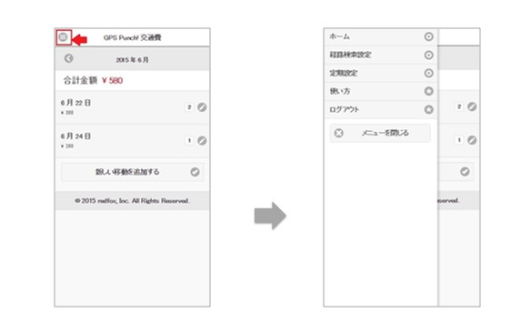
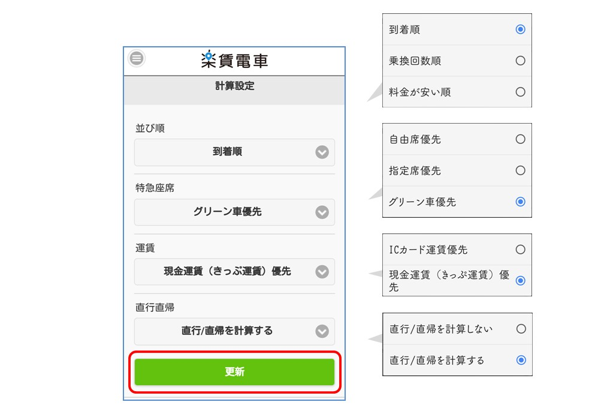
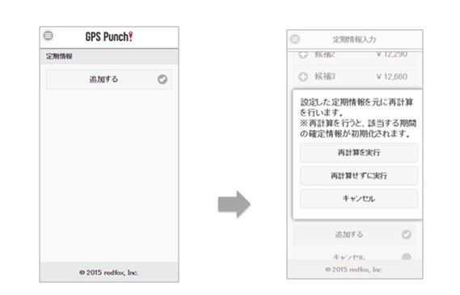

- 設定画面について
左上の「メニュー」アイコンをタップすると、設定などの各種メニューが開きます。交通費計算の実態に合わせて「経路検索設定」と「定期設定」をします。

経路検索条件の設定
「並び順」は経路の候補の順番、「特急座席」で主に利用する席の種別など、各種の設定を切り替えることができます。下へスクロールして、最後に「更新」を押します。

| 項目 | 説明 |
|---|---|
| 並び順 | 経路計算を到着が早い順、乗り換え回数が少ない順、金額が安い順のいずれかに変更できます。 |
| 特急座席 | いつも利用する特急座席タイプをデフォルトにできます。 |
| 運賃 | ICカード、現金のいずれかをデフォルトにできます。 |
| 直行直帰 | 記録開始・記録終了時に自宅最寄り駅までの移動を自動的に作成します。 |
- 定期設定
通勤定期券の設定をします。定期券の期間と経路を設定すると、期間内の交通費計算を再計算することができます。

- 自宅最寄り駅を出発に、職場最寄り駅を行き先に入力して検索ボタンを押します。
- 経路を選択して「追加する」ボタンを押します。